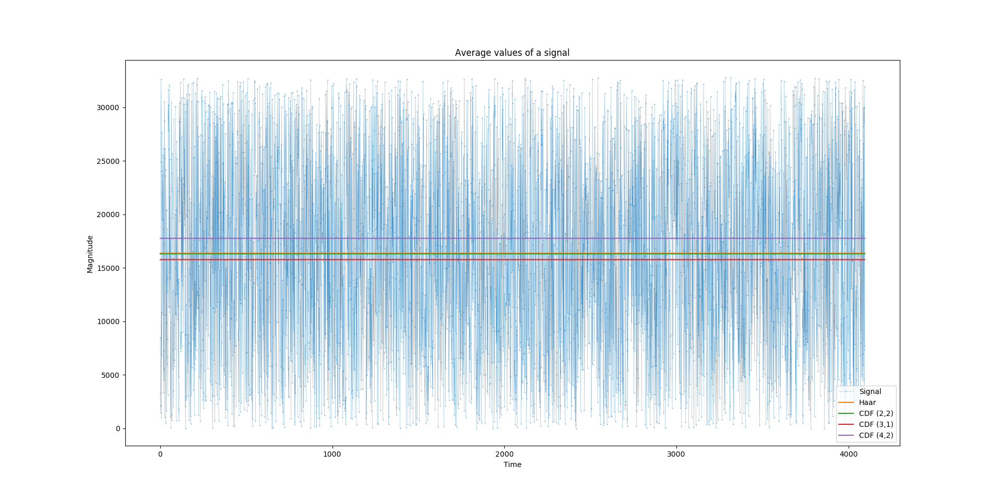

Wavelets present in this library are designed to preserve an average of a signal in the first coefficients of the discrete wavelet transform. DWT is performed in several steps. Each step divides the input signal into two downsampled (also by the factor of 2) parts: the average of the signal and the details. The inverse DWT can be performed upsampling these parts and "applying" the details to the average. The average is called so because its mean value equals to the mean of the original input signal. Performing the full DWT results in the first element of an output array to be equal to the mean of all elements in the input.
Unfortunatelly, all said above is not exactly true. When the library processes a signal near to its borders (at the beginning and the end of an input array), some bad effects appear. These effects originate from the fact that a wavelet has some "location" in time and cannot "vanish" abruptly at the borders of your input. Moreover, these effects are cummulative, meaning they increase both with the number of vanishing moments and the steps you need to perform DWT. The only wavelet which preserve the mean exactly (give or take some small constant which appears because of rounding) is Haar wavelet. All other wavelets have some error because of these effects.
To demonstrate this error look at the plot below. You can see a random input
signal (thin blue line) which consists of 4096 samples and is later
transformed using DWT as follows: (wavelets:dwt *input* :wavelet wavelet
:steps -4). :steps -4 part means that the last four steps of DWT were
omitted. In this case a mean of the original signal equals to a mean of the
first 2^4 = 16 samples of the transformed signal. These mean values are
plotted for each wavelet as horizontal lines. You can see that Haar and CDF
(2,2) wavelets give the most exact values of the mean and CDF (3,1) and (4,2)
give a bit wrong value.
Conclusion: If you want DWT to preserve the mean of your signal you either
have to use Haar wavelet or specify :steps argument with some reasonable
negative value.
